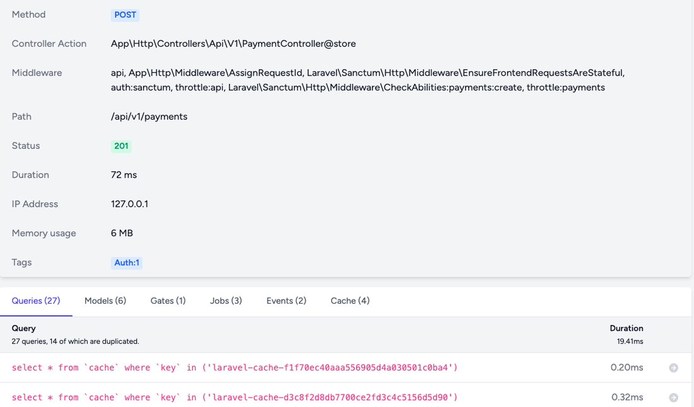

Pengujian & Kualiti Sistem
Muhammad Hamizi Jaminan · Trainer
Objektif & hasil pembelajaran
Objektif
Peserta mampu menulis ujian automatik dan memantau kesihatan sistem secara berpusat.
Hasil pembelajaran
Peserta boleh deploy dengan keyakinan menggunakan automated test suite (set ujian automatik) dan memantau sistem secara proaktif.
curl satu demi satu. Hari ini kita tulis ujian yang menyemak semuanya dalam kurang dari satu saat.Jadual Modul 5
Ujian pertama
Pest, folder Unit dan Feature
Unit testing
Dataset, mock, Http::fake()
Feature testing
Endpoint bayaran, factory, fake
TDD
Test-Driven Development: red, green, refactor
Log management
Channel, JSON, request_id
Monitoring
Health check, Telescope, amaran
Sarapan 10:00 – 10:15 pagi · Makan tengah hari 1:00 – 2:00 petang · Minum petang 3:45 – 4:00 petang (Hari 1 – 3; Hari 4 rehat Jumaat 12:15 – 2:45 petang).
Modul 5: Hari 3, 4:04 – 4:28 petang; Hari 4, 8:00 – 11:36 pagi.
Unit Testing
Uji satu class, tanpa HTTP
Bagaimana anda tahu bayaran masih betul?
| Modul | Perubahan pada aliran bayaran | Yang boleh rosak tanpa disedari |
|---|---|---|
| 1 | LatePenaltyCalculator, PaymentProcessor | Amaun penalti salah |
| 2 | lockForUpdate() untuk klik dua kali | Invois dibayar dua kali |
| 3 | InvoicePolicy, StorePaymentRequest, token abilities | Aisyah boleh bayar invois Badrul |
| 4 | PaymentReceived selepas commit, job ke sistem kewangan | Resit tidak dihantar |
Hari ini
Selepas setiap perubahan, ulang 6 senario curl dengan tangan. Bila tergesa-gesa, langkau.
Matlamat
Satu arahan, php artisan test, semak semua senario setiap kali sebelum deploy.
Unit atau feature?
| Unit test | Feature test | |
|---|---|---|
| Uji | Satu class, panggil method terus | Satu request HTTP, dari route hingga pangkalan data |
| Folder | tests/Unit | tests/Feature |
| Contoh | LatePenaltyCalculator kira 5% | POST /api/v1/payments pulangkan 201 |
| Kelajuan | Milisaat | Lebih perlahan: migrate, factory, middleware |
| Bila gagal | Tahu tepat class mana | Tahu ciri mana rosak, perlu cari punca |
Pest: rangka kerja ujian yang Laravel tawarkan semasa laravel new, dibina di atas PHPUnit. Contoh ujian dalam Modul 1 sudah guna Pest. php artisan test menjalankan kedua-duanya.
phpunit.xml menukar persekitaran semasa ujian: DB_CONNECTION=sqlite dalam memori, QUEUE_CONNECTION=sync, MAIL_MAILER=array. Ingat sync ini; ia akan muncul semula esok.
Uji kalkulator penalti dari Modul 1
tests/Unit/LatePenaltyCalculatorTest.php
use App\Billing\LatePenaltyCalculator;
use App\Enums\FeeType;
use App\Models\Invoice;
use Illuminate\Support\Carbon;
it('tiada penalti sebelum tarikh akhir', function () {
$invoice = new Invoice([
'type' => FeeType::Semester, 'amount' => 1100, 'due_date' => '2026-12-15',
]);
$penalty = (new LatePenaltyCalculator)->for($invoice, Carbon::parse('2026-12-01'));
expect($penalty)->toBe(0.0);
});
it('penalti 5% untuk yuran semester yang lewat', function () {
$invoice = new Invoice([
'type' => FeeType::Semester, 'amount' => 1100, 'due_date' => '2026-12-15',
]);
$penalty = (new LatePenaltyCalculator)->for($invoice, Carbon::parse('2026-12-20'));
expect($penalty)->toBe(55.0);
});
$ php artisan make:test LatePenaltyCalculatorTest --unit
it('...'): satu ujian. Nama ditulis sebagai ayat- Sedia: invois dalam memori, tidak disimpan
- Laksana: panggil
for(), hantar tarikh "hari ini" sendiri. Sebab inilah Modul 1 terima$todaysebagai argumen, bukan panggilnow() - Semak:
expect()->toBe()banding nilai dan jenis (===)
Kenapa connection() dalam unit test?
SEBELUM
$ php artisan test
FAILED Tests\Unit\LatePenaltyCalculatorTest
> it tiada penalti sebelum tarikh akhir Error
Call to a member function connection() on null
at vendor/laravel/framework/src/Illuminate/
Database/Eloquent/Model.php:2331
Tests: 2 failed (0 assertions)
Folder tests/Unit tidak memulakan Laravel. Cast 'due_date' => 'date' pada Invoice perlukan sambungan pangkalan data untuk tahu format tarikh.
SELEPAS
tests/Unit/LatePenaltyCalculatorTest.php (tambah)
use Tests\TestCase;
uses(TestCase::class);
PASS Tests\Unit\LatePenaltyCalculatorTest
✓ it tiada penalti sebelum tarikh akhir 0.08s
✓ it penalti 5% untuk yuran semester yang lewat
Tests: 2 passed (2 assertions)
Duration: 0.16s
uses(TestCase::class) memulakan Laravel untuk fail ini sahaja. Ia masih unit test: satu class, tiada HTTP, tiada data disimpan.
Esok 8:00 pagi: sambung Modul 5
it(), expect()
uses(TestCase::class) bila perlu Laravel
Esok: mock, feature test endpoint bayaran, TDD (Test-Driven Development), log dan monitoring
Ulang kaji semalam
Setiap meja jawab (3 minit)
- Ujian
POST /api/v1/paymentspulangkan 201: unit atau feature? Kenapa? - Kenapa ujian pertama semalam gagal dengan
connection() on null? - Kenapa
LatePenaltyCalculator::for()terima$todaydan tidak panggilnow()sendiri?
Satu ujian, banyak kes
tests/Unit/LatePenaltyCalculatorTest.php
function invoice(FeeType $type, float $amount): Invoice
{
return new Invoice(['type' => $type, 'amount' => $amount, 'due_date' => '2026-12-15']);
}
it('kira penalti ikut jenis yuran', function (FeeType $type, float $amount, float $expected) {
$penalty = (new LatePenaltyCalculator)
->for(invoice($type, $amount), Carbon::parse('2026-12-20'));
expect($penalty)->toBe($expected);
})->with([
'semester 5%' => [FeeType::Semester, 1100, 55.0],
'denda perpustakaan 0' => [FeeType::LibraryFine, 30, 0.0],
]);
invoice(): fungsi bantu dalam fail ujian, supaya setiap kes satu baris->with([...]): setiap baris dihantar sebagai argumen ujian- Kunci array menjadi nama kes dalam output
- Kes baru = tambah satu baris, bukan satu ujian
PASS Tests\Unit\LatePenaltyCalculatorTest
✓ it tiada penalti sebelum tarikh akhir
✓ it kira penalti ikut jenis yuran
with dataset "semester 5%"
✓ it kira penalti ikut jenis yuran
with dataset "denda perpustakaan 0"
Tests: 3 passed (3 assertions)
Mock, fake, atau objek sebenar?
| Apa | Contoh dalam sistem yuran | |
|---|---|---|
| Objek sebenar | Tiada dependency luar, cepat | LatePenaltyCalculator: guna terus |
| Mock (Mockery) | Objek palsu yang anda programkan: pulangkan apa, dan semak ia dipanggil | PaymentGateway dalam ujian PaymentProcessor |
| Fake sendiri | Class palsu yang anda tulis, implement interface yang sama | FakePaymentGateway dari Modul 1 |
| Fake Laravel | Laravel ganti servis sebenar dan rekod apa yang berlaku | Http::fake(), Queue::fake(), Mail::fake(), Event::fake() |
Uji PaymentProcessor tanpa bank
tests/Unit/PaymentProcessorTest.php
use App\Enums\PaymentMethod;
use App\Models\Invoice;
use App\Payments\PaymentGateway;
use App\Payments\PaymentProcessor;
it('caj melalui gateway yang menyokong kaedah bayaran', function () {
$invoice = new Invoice(['number' => 'INV0000001']);
$card = Mockery::mock(PaymentGateway::class);
$card->shouldReceive('supports')->with(PaymentMethod::Fpx)->andReturnFalse();
$card->shouldNotReceive('charge');
$fpx = Mockery::mock(PaymentGateway::class);
$fpx->shouldReceive('supports')->with(PaymentMethod::Fpx)->andReturnTrue();
$fpx->shouldReceive('charge')->once()->with($invoice, 1100.0)->andReturn('FPX424150');
$reference = (new PaymentProcessor([$card, $fpx]))
->charge($invoice, PaymentMethod::Fpx, 1100.0);
expect($reference)->toBe('FPX424150');
});
Mockery::mock(PaymentGateway::class): objek palsu yang implement interfaceshouldReceive('supports')->andReturnFalse(): jawapan yang kita tetapkanshouldNotReceive('charge'): gateway kad tidak boleh dicajonce()->with($invoice, 1100.0): FPX dicaj tepat sekali, dengan amaun ini- Tiada
uses(TestCase::class): invois ini tiada tarikh, jadi tidak perlu Laravel
Bila charge() tidak dipanggil
app/Payments/PaymentProcessor.php (rosakkan sengaja)
if ($gateway->supports($method)) {
return 'FPX424150'; // lupa caj bank
}
FAILED Tests\Unit\PaymentProcessorTest
> it caj melalui gateway yang… InvalidCountException
Method charge(object(App\Models\Invoice), 1100)
from Mockery_0_App_Payments_PaymentGateway
should be called exactly 1 times but called 0 times.
Nilai pulangan betul, tetapi bank tidak pernah dicaj. Hanya once() yang menangkapnya.
tests/Unit/PaymentProcessorTest.php (ujian kedua)
it('gagal jika tiada gateway menyokong kaedah bayaran', function () {
$fpx = Mockery::mock(PaymentGateway::class);
$fpx->shouldReceive('supports')->andReturnFalse();
(new PaymentProcessor([$fpx]))
->charge(new Invoice, PaymentMethod::Counter, 50.0);
})->throws(LogicException::class, 'Kaedah bayaran tidak disokong: counter');
✓ it caj melalui gateway yang menyokong kaedah bayaran
✓ it gagal jika tiada gateway menyokong kaedah bayaran
Tests: 2 passed (5 assertions)
Http::fake() untuk FpxGateway
tests/Unit/FpxGatewayTest.php
use App\Models\Invoice;
use App\Payments\FpxGateway;
use Illuminate\Http\Client\Request;
use Illuminate\Http\Client\RequestException;
use Illuminate\Support\Facades\Http;
use Tests\TestCase;
uses(TestCase::class);
beforeEach(function () {
config(['services.fpx.url' => 'https://fpx.test/charge', 'services.fpx.key' => 'kunci-ujian']);
});
it('hantar nombor invois dan amaun ke FPX', function () {
Http::fake(['fpx.test/*' => Http::response(['reference' => 'FPX424150'])]);
$reference = (new FpxGateway)->charge(new Invoice(['number' => 'INV0040006']), 1155.0);
expect($reference)->toBe('FPX424150');
Http::assertSent(fn (Request $request) =>
$request->hasHeader('Authorization', 'Bearer kunci-ujian')
&& $request['invoice'] === 'INV0040006'
&& $request['amount'] === 1155.0);
});
Httpialah facade, jadi perluuses(TestCase::class)beforeEach(): berjalan sebelum setiap ujian dalam failHttp::fake([...]): tiada request sebenar keluar; URL yang sepadan terima jawapan iniHttp::assertSent(): semak header token dan isi request
Bila bank pulangkan 503
tests/Unit/FpxGatewayTest.php (ujian kedua)
it('gagal jika FPX pulangkan ralat', function () {
Http::fake(['fpx.test/*' => Http::response(['message' => 'Bank tidak tersedia'], 503)]);
(new FpxGateway)->charge(new Invoice(['number' => 'INV0040006']), 1155.0);
})->throws(RequestException::class);
✓ it hantar nombor invois dan amaun ke FPX
✓ it gagal jika FPX pulangkan ralat
Tests: 2 passed (3 assertions)
->throw() dalam gateway jadikan 503 satu exception, seperti job sistem kewangan dalam Modul 4. Ujian ini memastikan tiada siapa membuang ->throw() kelak tanpa disedari.
Cari pepijat dengan ujian
Branch modul-5-start. Bendahari beri lima kes. Invois yuran bertarikh akhir 15 Dis 2026.
| Jenis | Amaun | Dibayar pada | Penalti |
|---|---|---|---|
| Semester | 1,100 | 1 Dis | 0.00 |
| Semester | 1,100 | 20 Dis | 55.00 |
| Asrama | 920 | 20 Dis | 18.40 |
| Denda perpustakaan | 30 | 20 Dis | 0.00 |
| Semester | 1,100 | 15 Dis, 10:30 pagi | 0.00 |
- Tulis kelima-lima kes dalam
LatePenaltyCalculatorTest(guna dataset) php artisan test. Untuk setiap kes merah, terangkan puncanya kepada meja- Betulkan
LatePenaltyCalculatorsehingga semua hijau
Bukti siap
Output dengan kes merah sebelum dibetulkan, dan output 5 passed selepasnya.
Siap awal? Dalam PaymentProcessorTest, tambah kes dua gateway yang kedua-duanya menyokong FPX. Yang mana dicaj? Tulis ujian yang membuktikannya.
Dua kes merah, dua pepijat sebenar
✓ it tiada penalti sebelum tarikh akhir
✓ it kira penalti ikut jenis yuran with dataset "semester 5%"
⨯ it kira penalti ikut jenis yuran with dataset "asrama 2%"
✓ it kira penalti ikut jenis yuran with dataset "denda perpustakaan 0"
⨯ it tiada penalti jika bayar pada hari akhir
Failed asserting that 18.400000000000002 is identical to 18.4.
Failed asserting that 55.0 is identical to 0.0.
Tests: 2 failed, 3 passed (5 assertions)
Asrama: 18.400000000000002
920 * 0.02 dalam float tidak tepat. Resit, laporan dan jumlah kutipan akan berbeza beberapa sen.
Hari akhir: penalti RM55
due_date ialah 15 Dis 00:00. Bayar pukul 10:30 pagi pada hari yang sama sudah dikira "lewat".
Semua hijau
app/Billing/LatePenaltyCalculator.php
namespace App\Billing;
use App\Enums\FeeType;
use App\Models\Invoice;
use Carbon\CarbonInterface;
final class LatePenaltyCalculator
{
public function for(Invoice $invoice, CarbonInterface $today): float
{
if ($today->lte($invoice->due_date->endOfDay())) {
return 0.0;
}
$rate = match ($invoice->type) {
FeeType::Semester => 0.05,
FeeType::Hostel => 0.02,
FeeType::LibraryFine => 0.0,
};
return round($invoice->amount * $rate, 2);
}
}
endOfDay(): hari akhir berakhir 23:59:59, bukan 00:00matchkini pulangkan kadar sahaja; satu tempat untuk darab dan bundarkanround(..., 2): wang sentiasa dua tempat perpuluhan
PASS Tests\Unit\LatePenaltyCalculatorTest
✓ it tiada penalti sebelum tarikh akhir
✓ it kira penalti ikut jenis yuran
with dataset "semester 5%"
✓ it kira penalti ikut jenis yuran
with dataset "asrama 2%"
✓ it kira penalti ikut jenis yuran
with dataset "denda perpustakaan 0"
✓ it tiada penalti jika bayar pada hari akhir
Tests: 5 passed (5 assertions)
Apa yang perlu dipalsukan?
| # | Ujian | Jawapan |
|---|---|---|
| 1 | Bundarkan penalti asrama 920 kepada 18.40 | Tiada. Guna LatePenaltyCalculator sebenar |
| 2 | FpxGateway hantar token dalam header Authorization | Http::fake() dan Http::assertSent() |
| 3 | PaymentProcessor tidak caj gateway kad untuk bayaran FPX | Mock PaymentGateway dengan shouldNotReceive('charge') |
| 4 | Eksport laporan (Modul 4) pulangkan 202 tanpa menjana fail | Queue::fake(), kemudian Queue::assertPushed(ExportCollectionReport::class) |
Feature Testing
Uji endpoint HTTP dengan pangkalan data sebenar
Factory: invois dalam satu baris
database/factories/InvoiceFactory.php
namespace Database\Factories;
use App\Enums\FeeType;
use App\Models\Student;
use Illuminate\Database\Eloquent\Factories\Factory;
class InvoiceFactory extends Factory
{
public function definition(): array
{
return [
'student_id' => Student::factory(),
'number' => fake()->unique()->numerify('INV#######'),
'type' => FeeType::Semester,
'amount' => 1100,
'due_date' => now()->addWeeks(2),
'paid_at' => null,
];
}
// overdue() dan paid(): slide seterusnya
}
definition(): nilai asal setiap invois baruStudent::factory(): pelajar dicipta sekali jika tidak diberifake()->unique(): nombor invois tidak berulang dalam satu ujian, dan ikut formatINV+ 7 digit dari Modul 3- Model perlu
use HasFactory - Jana dengan
php artisan make:factory InvoiceFactory
State: nama untuk situasi yang kerap diuji
database/factories/InvoiceFactory.php (tambah)
public function overdue(): static
{
return $this->state(['due_date' => now()->subDays(10)]);
}
public function paid(): static
{
return $this->state(['paid_at' => now()->subDay()]);
}
database/factories/UserFactory.php (tambah)
public function student(): static
{
return $this->state(fn () => [
'student_id' => Student::factory(),
'role' => 'student',
]);
}
public function bursary(): static
{
return $this->state(['role' => 'bursary']);
}
Dalam ujian
$aisyah = User::factory()->student()->create();
$invoice = Invoice::factory()
->for($aisyah->student)->overdue()->create(['amount' => 920]);
for($aisyah->student): invois milik Aisyah, bukan pelajar baru- State boleh digabung;
create([...])mengatasi nilai tertentu - Setiap ujian bermula dengan pangkalan data kosong: cipta hanya apa yang ujian perlukan
Aisyah bayar invoisnya
tests/Feature/PayInvoiceTest.php
use App\Models\{Invoice, User};
use Laravel\Sanctum\Sanctum;
it('pelajar boleh bayar invois sendiri', function () {
$user = User::factory()->student()->create();
$invoice = Invoice::factory()->for($user->student)->create(['amount' => 1100]);
Sanctum::actingAs($user, ['payments:create']);
$this->postJson('/api/v1/payments', [
'invoice_id' => $invoice->id,
'method' => 'fpx',
])->assertCreated();
$this->assertDatabaseHas('payments', ['invoice_id' => $invoice->id, 'method' => 'fpx']);
expect($invoice->fresh()->paid_at)->not->toBeNull();
});
tests/Pest.php
pest()->extend(TestCase::class)
->use(RefreshDatabase::class)
->in('Feature');
RefreshDatabase: migrate sekali, setiap ujian dalam transaksi yang di-rollback. Data tidak bocor ke ujian lain. Buang komen baris ini dalamPest.phpSanctum::actingAs($user, [...]): log masuk dengan token yang ada abilities ini, tanpaPOST /tokenspostJson(): request sebenar melalui route, middleware, FormRequest, policy danPaymentServiceassertDatabaseHas(): semak baris dalam jadual
QUEUE_CONNECTION=sync
Ujian yang menghubungi sistem kewangan
SEBELUM
FAILED Tests\Feature\PayInvoiceTest
> it pelajar boleh bayar invois sendiri
Expected response status code [201] but received 500.
The following exception occurred during the last request:
GuzzleHttp\Exception\ConnectException: cURL error 7:
Failed to connect to 127.0.0.1:8790 after 0 ms
... for http://127.0.0.1:8790/payments
phpunit.xml tetapkan queue sync, jadi SyncPaymentToFinance (Modul 4) berjalan serta-merta dan menghantar bayaran ujian ke FINANCE_URL dalam .env. Jika pelayan itu hidup, data palsu masuk ke sistem kewangan.
SELEPAS
use App\Jobs\SyncPaymentToFinance;
use App\Listeners\SendPaymentReceipt;
use Illuminate\Events\CallQueuedListener;
use Illuminate\Support\Facades\Queue;
// baris pertama dalam ujian
Queue::fake();
// ... postJson() seperti tadi ...
Queue::assertPushed(SyncPaymentToFinance::class);
Queue::assertPushed(CallQueuedListener::class,
fn ($job) => $job->class === SendPaymentReceipt::class);
✓ it pelajar boleh bayar invois sendiri 0.21s
Tests: 1 passed (5 assertions)
Job direkod, tidak dijalankan. Ujian kini juga membuktikan resit dan salinan kewangan dihantar ke queue.
beforeEach(fn () => Http::preventStrayRequests()); dalam tests/Pest.php. Request yang terlepas gagal dengan StrayRequestException: Attempted request to [http://127.0.0.1:8790/payments] without a matching fake.Uji apa yang tidak boleh berlaku
tests/Feature/PayInvoiceRulesTest.php
use App\Models\{Invoice, User};
use Illuminate\Support\Facades\Queue;
use Laravel\Sanctum\Sanctum;
beforeEach(function () {
Queue::fake();
$this->aisyah = User::factory()->student()->create();
Sanctum::actingAs($this->aisyah, ['payments:create']);
});
it('tidak boleh bayar invois pelajar lain', function () {
$badrul = User::factory()->student()->create();
$invoice = Invoice::factory()->for($badrul->student)->create();
$this->postJson('/api/v1/payments', ['invoice_id' => $invoice->id, 'method' => 'fpx'])
->assertForbidden();
$this->assertDatabaseCount('payments', 0);
});
it('menolak kaedah bayaran yang tidak wujud', function () {
$invoice = Invoice::factory()->for($this->aisyah->student)->create();
$this->postJson('/api/v1/payments', ['invoice_id' => $invoice->id, 'method' => 'cash'])
->assertUnprocessable()
->assertJsonValidationErrors(['method']);
});
PASS Tests\Feature\PayInvoiceRulesTest
✓ it tidak boleh bayar invois pelajar lain
✓ it menolak kaedah bayaran yang tidak wujud
✓ it tidak boleh bayar invois yang sudah dibayar
✓ it caj penalti jika invois lewat
✓ it token tanpa ability payments:create ditolak
Tests: 5 passed (9 assertions)
| Ujian | Modul | Assert |
|---|---|---|
| Invois orang lain | 3 (policy) | assertForbidden() 403 |
Kaedah cash | 3 (FormRequest) | assertUnprocessable() 422 |
| Sudah dibayar | 1 (exception) | assertConflict() 409 |
| Invois lewat | 1 (penalti) | assertJsonPath('data.amount', '1155.00') |
Token invoices:read | 3 (abilities) | assertForbidden() 403 |
Lulus di production, gagal dalam ujian
SEBELUM
tests/Feature/ShowInvoiceTest.php
$this->getJson("/api/v1/invoices/{$invoice->id}")
->assertOk()
->assertJsonPath('data.amount', '1100.00');
# SQLite dalam memori (phpunit.xml)
Failed asserting that 1100 is identical to '1100.00'.
# MySQL 8
✓ it pelajar melihat amaun invois sendiri
MySQL pulangkan kolum decimal sebagai teks "1100.00"; SQLite pulangkan nombor 1100. API yang sama, JSON berbeza.
SELEPAS
app/Models/Invoice.php dan Payment.php
protected $casts = [
// ... cast sedia ada ...
'amount' => 'decimal:2',
];
$ php artisan test
Tests: 15 passed (27 assertions)
Duration: 0.29s
$ DB_CONNECTION=mysql DB_DATABASE=utm_test php artisan test
Tests: 15 passed (27 assertions)
Duration: 0.74s
Cast menentukan bentuk JSON, bukan pangkalan data. Ujian SQLite pantas untuk setiap simpanan; jalankan juga dengan MySQL sebelum deploy.
Siapa boleh lihat invois?
Tulis tests/Feature/InvoiceAccessTest.php untuk GET /api/v1/invoices/{invoice}. Guna beforeEach() untuk cipta Aisyah dan invoisnya.
| Siapa | Jangkaan |
|---|---|
Aisyah, token invoices:read | 200, data.number sama |
| Pelajar lain | 403 |
Bendahari (bursary()) | 200 |
| Tiada token | 401 |
Kemudian jalankan seluruh suite sekali dengan MySQL (DB_CONNECTION=mysql DB_DATABASE=utm_test).
Bukti siap
Empat ujian hijau, dan output suite penuh dengan SQLite dan MySQL.
Siap awal? Invois yang tidak wujud (/api/v1/invoices/999) mesti pulangkan 404. Kemudian terangkan kepada meja: kenapa 404 dan bukan 403?
Test-Driven Development
Tulis ujian dahulu, kemudian kod
Merah, hijau, kemas
Ujian dahulu, sebelum satu baris kod
tests/Unit/LatePenaltyCalculatorTest.php (tambah)
it('penalti tidak melebihi RM200', function () {
$penalty = (new LatePenaltyCalculator)
->for(invoice(FeeType::Semester, 4800), Carbon::parse('2026-12-20'));
expect($penalty)->toBe(200.0);
});
$ php artisan test --filter=RM200
FAIL Tests\Unit\LatePenaltyCalculatorTest
⨯ it penalti tidak melebihi RM200 0.07s
FAILED Tests\Unit\LatePenaltyCalculatorTest > it penalti tidak melebihi RM200
Failed asserting that 240.0 is identical to 200.0.
Tests: 1 failed (1 assertions)
Merah untuk sebab yang betul: 5% daripada 4,800 = 240. Ujian ini kini spesifikasi yang boleh dijalankan.
Kod paling sedikit yang lulus
app/Billing/LatePenaltyCalculator.php (satu baris berubah)
return min(round($invoice->amount * $rate, 2), 200.0);
$ php artisan test --filter=RM200
PASS Tests\Unit\LatePenaltyCalculatorTest
✓ it penalti tidak melebihi RM200 0.06s
Tests: 1 passed (1 assertions)
Belum cantik: nombor 200.0 tanpa nama. Tidak mengapa. Lulus dahulu, kemas kemudian.
Beri nama, kemudian jalankan semua
app/Billing/LatePenaltyCalculator.php
final class LatePenaltyCalculator
{
private const MAX_PENALTY = 200.0;
public function for(Invoice $invoice, CarbonInterface $today): float
{
if ($today->lte($invoice->due_date->endOfDay())) {
return 0.0;
}
$rate = match ($invoice->type) {
FeeType::Semester => 0.05,
FeeType::Hostel => 0.02,
FeeType::LibraryFine => 0.0,
};
return min(round($invoice->amount * $rate, 2), self::MAX_PENALTY);
}
}
$ php artisan test tests/Unit/LatePenaltyCalculatorTest.php
PASS Tests\Unit\LatePenaltyCalculatorTest
✓ it tiada penalti sebelum tarikh akhir
✓ it kira penalti ikut jenis yuran
with dataset "semester 5%"
✓ ... with dataset "asrama 2%"
✓ ... with dataset "denda perpustakaan 0"
✓ it tiada penalti jika bayar pada hari akhir
✓ it penalti tidak melebihi RM200
Tests: 6 passed (6 assertions)
- Refactor hanya bila semua hijau
- Jalankan semua ujian fail, bukan
--filtersahaja: had baru tidak merosakkan kes lain
Sarapan · 15 minit
15:00
Seterusnya: Lab 3, TDD (Test-Driven Development) secara berpasangan
Diskaun bayar awal, ujian dahulu
Bendahari: yuran semester yang dibayar sekurang-kurangnya 14 hari sebelum tarikh akhir dapat diskaun 2%. Jenis lain: tiada diskaun.
- Seorang menaip, seorang menyemak. Tukar peranan selepas setiap pusingan
- Tulis ujian dataset untuk
EarlyPaymentDiscount::for($invoice, $today)sebelum class wujud - Jalankan: merah pertama ialah
Class "App\Billing\EarlyPaymentDiscount" not found - Kod paling sedikit sehingga hijau, kemudian kemaskan
Kes untuk invois 1,100, tarikh akhir 15 Dis: 25 Nov → 22.00; 1 Dis 4:00 petang → 22.00; 2 Dis → 0.00; asrama 25 Nov → 0.00.
Bukti siap
Tunjuk kepada pasangan output merah sebelum kod ditulis, dan output hijau selepasnya.
Siap awal? Bendahari tambah: diskaun tidak diberi jika invois sudah lewat bayar semester lepas. Apa ujian yang anda perlukan dahulu? Bincangkan dengan meja, jangan tulis kod.
Log Management
Channel, structured logging, dan apa yang tidak boleh ditulis
Level dan channel
.env (nilai asal Laravel 13)
LOG_CHANNEL=stack
LOG_STACK=single
LOG_LEVEL=debug
config/logging.php (petikan)
'stack' => [
'driver' => 'stack',
'channels' => explode(',', (string) env('LOG_STACK', 'single')),
],
'daily' => [
'driver' => 'daily',
'path' => storage_path('logs/laravel.log'),
'level' => env('LOG_LEVEL', 'debug'),
'max_files' => env('LOG_DAILY_DAYS', 14),
],
single: satu fail yang membesar tanpa haddaily: satu fail sehari, simpan 14 hari. Untuk pelayan:LOG_STACK=dailystack: hantar ke beberapa channel serentak
| Level | Contoh dalam sistem yuran |
|---|---|
critical | Job ke sistem kewangan gagal selepas 4 cubaan (failed(), Modul 4) |
error | Exception yang tidak ditangkap (Laravel log sendiri) |
warning | Amaun invois diubah (InvoiceObserver, Modul 4) |
info | Bayaran diterima |
debug | Nilai pembolehubah semasa menyiasat |
LOG_LEVEL ialah had bawah: LOG_LEVEL=info di production membuang semua debug. Level lain (emergency, alert, notice) jarang diperlukan.Channel khas bayaran, satu baris JSON
config/logging.php (tambah dalam 'channels')
'payments' => [
'driver' => 'daily',
'path' => storage_path('logs/payments.log'),
'level' => 'info',
'max_files' => 90,
'formatter' => Monolog\Formatter\JsonFormatter::class,
],
app/Services/PaymentService.php (dalam transaksi, selepas event)
Log::channel('payments')->info('Bayaran diterima', [
'invoice' => $invoice->number,
'amount' => $payment->amount,
'method' => $payment->method->value,
'reference' => $payment->reference,
]);
storage/logs/payments-2026-11-22.log
{
"message": "Bayaran diterima",
"context": {
"invoice": "INV0040008",
"amount": "1155.00",
"method": "fpx",
"reference": "SBX852654"
},
"level_name": "INFO",
"datetime": "2026-11-22T07:26:54.946088+00:00"
}
- Satu baris JSON setiap peristiwa: boleh dicari dengan
jqatau dihantar ke Graylog, ELK, Loki - Teks bebas (
"Aisyah bayar 1155") sukar ditapis; medan bernama mudah - 90 hari, berasingan dari log ralat aplikasi
Satu request_id, dari request hingga worker
app/Http/Middleware/AssignRequestId.php
namespace App\Http\Middleware;
use Closure;
use Illuminate\Http\Request;
use Illuminate\Support\Facades\Context;
use Illuminate\Support\Str;
use Symfony\Component\HttpFoundation\Response;
final class AssignRequestId
{
public function handle(Request $request, Closure $next): Response
{
$id = (string) Str::uuid();
Context::add('request_id', $id);
return $next($request)->header('X-Request-Id', $id);
}
}
routes/api.php
Route::prefix('v1')->middleware(AssignRequestId::class)->group(function () {
$ curl -i -X POST .../api/v1/payments ...
HTTP/1.1 201 Created
X-Request-Id: 945f7b96-0e66-4665-a780-dabe67f99e54
payments log: request, kemudian worker
"Bayaran diterima" ...
"extra":{"request_id":"945f7b96-0e66-4665-a780-dabe67f99e54"}
"Disalin ke sistem kewangan" ...
"extra":{"request_id":"945f7b96-0e66-4665-a780-dabe67f99e54"}
Context::add(): setiap log selepas ini dapat medan tersebut, tanpa ditulis semula- Context dibawa ke job dalam queue: baris kedua ditulis oleh worker, request_id sama
- Aduan pelajar beri
X-Request-Id, anda cari satu ID untuk seluruh perjalanan
Kata laluan dalam log
SEBELUM
app/Http/Controllers/Api/V1/TokenController.php · store()
Log::info('Cubaan log masuk', $request->all());
local.INFO: Cubaan log masuk
{"email":"aisyah@graduate.utm.my",
"password":"rahsia123",
"device_name":"iPhone"}
Cubaan yang gagal (422) pun ditulis. Sesiapa yang boleh baca storage/logs, atau sistem log berpusat, kini tahu kata laluan.
SELEPAS
app/Http/Controllers/Api/V1/TokenController.php · store()
Log::info('Cubaan log masuk', $request->only('email', 'device_name'));
local.INFO: Cubaan log masuk
{"email":"aisyah@graduate.utm.my",
"device_name":"iPhone"}
Senaraikan medan yang dibenarkan, bukan buang yang dilarang: medan baru (contohnya nombor kad) tidak akan bocor secara tidak sengaja.
Level apa, channel mana?
| # | Peristiwa | Jawapan |
|---|---|---|
| 1 | Bayaran FPX berjaya | info, channel payments |
| 2 | Sistem kewangan masih 503 selepas 4 cubaan | critical dalam failed(); perlu sampai ke developer atau pentadbir |
| 3 | dump($invoice) semasa mencari pepijat di production | Jangan. debug, dan LOG_LEVEL=info akan membuangnya |
| 4 | Pelajar mengadu bayaran 9:15 pagi tiada resit | Minta X-Request-Id, cari dalam payments dan log worker |
Application Monitoring
Health check, Telescope, dan amaran
/up kata "up", pelajar dapat 500
Laravel 13 sedia ada route /up (didaftarkan oleh health: '/up' dalam bootstrap/app.php). Pemantau uptime biasanya panggil URL ini setiap minit.
MySQL dihentikan (port salah dalam .env)
$ curl -H "Accept: application/json" .../up
{"status":"up"} 200
$ curl .../api/v1/invoices -H "Authorization: Bearer …"
500
Kenapa?
/up hanya membuktikan PHP dan Laravel boleh bermula. Ia tidak menyentuh pangkalan data, queue atau Redis.
Penyelesaian
Semasa /up dipanggil, Laravel menghantar event DiagnosingHealth. Jika mana-mana listener melontar exception, /up pulangkan 500. Kita tambah listener yang menyemak apa yang sistem yuran perlukan.
Listener DiagnosingHealth
app/Listeners/CheckCriticalServices.php
namespace App\Listeners;
use Illuminate\Foundation\Events\DiagnosingHealth;
use Illuminate\Support\Facades\DB;
use Illuminate\Support\Facades\Queue;
use RuntimeException;
final class CheckCriticalServices
{
public function handle(DiagnosingHealth $event): void
{
DB::select('select 1');
$waiting = Queue::size('default');
if ($waiting > 500) {
throw new RuntimeException("Queue default tersekat: {$waiting} job menunggu.");
}
}
}
$ php artisan event:list --event=DiagnosingHealth
Illuminate\Foundation\Events\DiagnosingHealth
⇂ App\Listeners\CheckCriticalServices@handle
# MySQL dihentikan
{"status":"down"} 500
# 501 job menunggu dalam queue default
500
laravel.log: Queue default tersekat: 501 job menunggu.
- Ditemui melalui event discovery (Modul 4), tiada pendaftaran
Queue::size()berfungsi untuk driver database dan Redis- Mesej ralat ditulis ke log, tetapi tidak dipaparkan kepada orang awam
Lihat apa yang berlaku dalam setiap request
$ composer require laravel/telescope
$ php artisan telescope:install
Publishing Telescope Service Provider...
Publishing Telescope Configuration...
Publishing Telescope Migrations...
Telescope scaffolding installed successfully.
$ php artisan migrate
Buka /telescope. Setiap request, query, job, emel, event, cache dan exception direkod ke jadual telescope_entries.
app/Providers/TelescopeServiceProvider.php
protected function gate(): void
{
Gate::define('viewTelescope', function (User $user) {
return in_array($user->email, [
'pentadbir@utm.my',
]);
});
}
- Di
local, sesiapa boleh buka. Di persekitaran lain, hanya pengguna yang lulus gate ini - Telescope merekod payload request: data pelajar ada di situ. Untuk production,
TELESCOPE_ENABLED=falseatau hadkan kepada staging - Jadual membesar cepat: jadualkan
telescope:prune(Modul 4)
27 query untuk satu bayaran?

| Query | Bil. | Dari mana |
|---|---|---|
Jadual cache | 16 | throttle:api dan throttle:payments (Modul 3), kerana CACHE_STORE=database |
insert into jobs | 3 | Event broadcast, resit, salinan kewangan (Modul 4) |
invoices | 3 | authorize(), peraturan exists, repository |
| Lain-lain | 5 | Token, pengguna, pelajar, simpan bayaran, kemas kini invois |
CACHE_STORE=redis (Modul 2) dan 16 query itu keluar dari MySQL. Telescope tunjuk di mana masa pergi; ujian memastikan pembaikan tidak merosakkan apa-apa.Siapa yang diberitahu, dan bila?
| Isyarat | Sumber | Ke mana |
|---|---|---|
| Sistem down | /up pulangkan 500 atau tiada jawapan | Pemantau uptime luaran, contohnya Uptime Kuma (uptime.kuma.pet), emel atau Telegram |
| Job gagal habis cubaan | Log::critical() dalam failed() | Channel slack: LOG_STACK=daily,slack dan LOG_SLACK_WEBHOOK_URL |
| Exception baru, query perlahan | Aplikasi sendiri | Laravel Pulse (pulse.laravel.com) atau Laravel Nightwatch (nightwatch.laravel.com) |
config/logging.php, channel slack guna 'level' => env('LOG_LEVEL', 'critical'). Dengan LOG_LEVEL=debug, setiap log masuk ke Slack. Tetapkan 'level' => 'critical' secara terus untuk channel ini.Jejak satu bayaran, pantau satu sistem
- Tambah channel
payments(JSON) dan logBayaran diterimadalamPaymentService - Tambah
AssignRequestIdpada kumpulan routev1 - Bayar satu invois dengan
curl -i, jalankanqueue:work --stop-when-empty grepnilaiX-Request-Iddalamstorage/logs- Tambah
CheckCriticalServices. TukarDB_PORTkepada port salah, panggil/up, kemudian pulihkan
Bukti siap
Hasil grep dengan sekurang-kurangnya dua baris yang berkongsi request_id yang sama, dan {"status":"down"} semasa DB dihentikan.
Siap awal? Jalankan php artisan test semula. Semua masih hijau? Lihat storage/logs/payments-*.log: apa yang ujian tulis di situ, dan bagaimana anda mahu menghalangnya?
Jalankan ujian setiap kali kod dihantar
Continuous integration (CI): pelayan menjalankan php artisan test pada setiap push, dan menghalang merge jika merah.
GitHub Actions: docs.github.com/actions
GitLab CI/CD: docs.gitlab.com/ci
Modul 5 dalam satu slide
| Bahagian | Yang kita jumpa (diukur) | Yang perlu diingat |
|---|---|---|
| Unit testing | Dua pepijat Modul 1: 18.400000000000002 dan penalti pada hari akhir | Dataset untuk kes sempadan; uses(TestCase::class) bila perlu Laravel |
| Mock & fake | once() tangkap bank yang tidak dicaj | Palsukan dunia luar sahaja |
| Feature testing | Ujian menghubungi sistem kewangan; SQLite 1100 lawan MySQL "1100.00" | Queue::fake(), preventStrayRequests(), cast decimal:2 |
| TDD (Test-Driven Development) | Had RM200: merah 240.0, hijau, kemas | Lihat merah dahulu |
| Log | Kata laluan dalam log; request_id sampai ke worker | Channel JSON, Context, only() |
| Monitoring | /up "up" semasa DB mati; 16 daripada 27 query dari had kadar | DiagnosingHealth, Telescope di luar production |
php artisan test, bukan oleh ingatan anda.Modul 6 — Pembangunan Dipandu AI
AI boleh menulis kod dan ujian dalam beberapa saat. Bagaimana anda tahu ia betul? Ujian yang anda tulis hari ini ialah jawapannya.